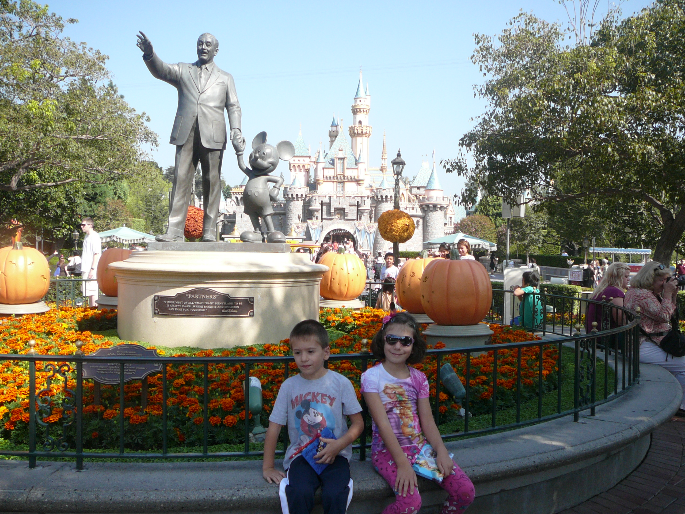
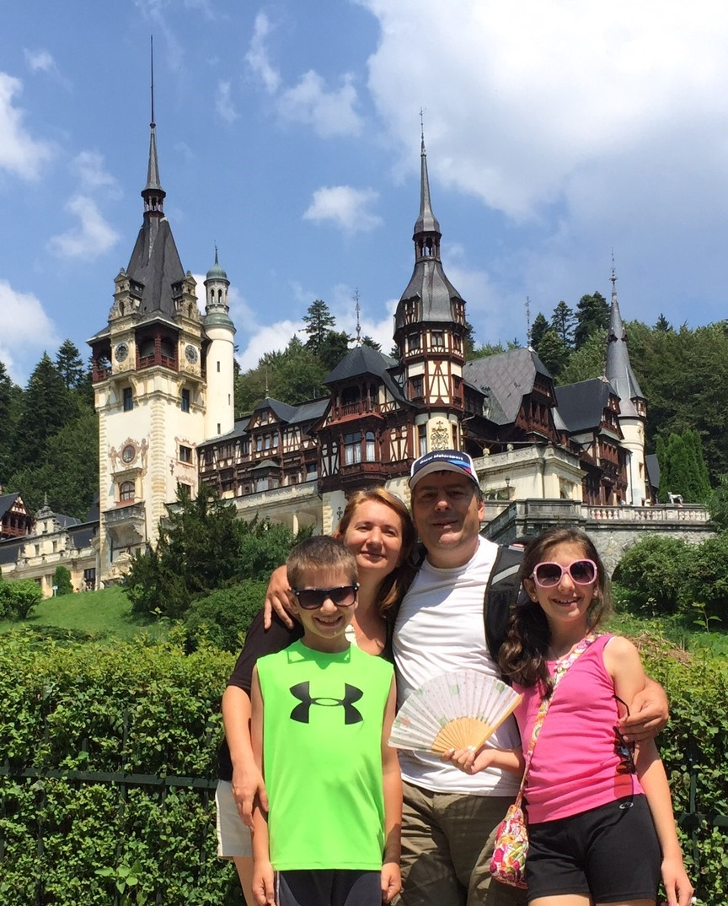
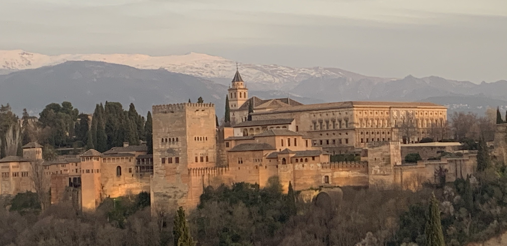

Travel
My family loves to travel because the experiences from learning about different cultures
and history enriches life and helps us to understand ourselves. We have seen many beautiful
places in Europe and the Caribbean. My family also comes from Romania, so we have visited a
few times through the years. Below is a story of where I have been and what I have learned.
Bucharest, Romania
The first time I ever went on a plane was when I was three years old. For Christmas in 2007,
my mom, dad, one-year-old brother, and I traveled to Romania to visit family. We spent about two
weeks with our family in Bucharest. The picture on the left shows me hugging my grandfather in
the airport after we landed. On the right, I am with my aunt. I got to see a lot of my family
for the first time during this trip and had a lot of fun spending time with them.
Los Angeles, California

When I was in second grade, my family visited Disney Land in California. It was just before
Halloween but still very warm. My brother and I enjoyed visiting all the princesses and going on
the amusement park rides. It was like a dream come true for me! While we were in the area, we
also visited L.A., Hollywood, and the beach. I remember the sunsets being absolutely stunning
from the top of the hotel building. It was so cool to see so many landmarks and spend a couple
days in the city of angels.
Southern Italy
The next summer, I got to see several cities in southern Italy. We visited Naples, Rome,
Pompeii, and Amalfi. I loved the beautiful coasts and the Ancient Roman ruins. The food was
also so delicious! We got a hotel very close to Trevi Fountain, pictured in the middle. My
brother and I threw in coins and made wishes. The Colosseum was one of my favorite attractions
because I liked the history of the stadium. I also thought that it was cool because half of it
had crumbled! After touring around the area, we went to visit family in Romania, where I saw my
grandparents’ newly built house for the first time. On the right, my brother and I are pictured
with one of their dogs.
U.S. Virgin Islands
In fourth grade, my family vacationed to the Virgin Islands. We spent many days relaxing on
the beach and finding many conch shells. My favorite activity was scuba diving because I got to
see the vivid coral and tropical fish. The picturesque view always included a stunning blue
ocean and a warm ray of sunshine. There was no better way to spend February break than visiting
the Caribbean and spending time with family.
Romania


For my third visit in Romania, I not only visited family in Bucharest, but also saw some of
the beautiful countryside with my aunt. On the left is my family outside the beautiful Peleş
Castle (the king’s castle) in the Carpathian Mountains. We also explored Bran Castle, more
commonly known as Vlad the Impaler’s castle in Transylvania. The fortress, shown on the right,
became popular because of the horror novel Dracula written by the Irish author Bram Stoker.
I loved seeing more of the country where my parents grew up and learning about the rich culture
and history there.
Northern Italy
We felt as though we did not see enough of Italy during the first trip, so we visited some
cities in the north. We saw Milan and Verona first, then visited Pisa, Florence, Venice, and
Cinque Terre. The Duomo in Milan was magnificent and had mind-blowing architecture. Verona, the
location of Shakespeare’s Romeo and Juliet, was cute and cozy. To the right is an image of me
pretending to hold up the Leaning Tower of Pisa. I loved learning about why it is leaning
and what engineers did to keep it from toppling over (they used weights and adjusted the ground at
the foundation to lower the tilting angle). After that, we stayed in Florence for a few days,
pictured above. It was my favorite place that we visited during this trip because of the gorgeous
Renaissance artwork. I liked the paintings on the ceiling of Brunelleschi’s dome the most. Venice
had the loveliest gondolas and Cinque Terre, five towns on the coast, had the best view. I hope
to come back to visit these cities one day.
Jamaica
Over April break in seventh grade, my family vacationed in Jamaica. To the left is the stunning
ocean view from the backyard of the house we rented. Out of the three places in the Caribbean that
I have visited, I think that Jamaica was the most beautiful. The ocean was so calm, and I felt the
most at peace strolling on the beach at sunset. I loved the Jamaican cuisine so much. One of my
favorite dishes resembles scrambled eggs. Ackee, the national fruit of Jamaica, is used instead of
eggs. I miss the peace that I felt while watching the sunset and I hope to go back in the future.
Barbados
Less than a year later, my family decided to come back to the Caribbean. We
enjoyed the warm climate. Besides the beautiful beaches, we got to see many tropical animals such
as colorful birds in a reservation and monkeys in the streets and our backyard! We even went
swimming with turtles and saw tropical fish via submarine. Most of all, I loved spending time with
family and relaxing on a gorgeous island for a week. To the right is a picture of me on one of our
last days there at the northern coast.
London, United Kingdom
For my birthday, my mom surprised me with a mother-daughter weekend in London! We spent my
birthday and Mother’s Day together touring London. We visited Big Ben, Buckingham Palace, and rode
around the city in a red double-decker bus. We spent a lot of time in the parks viewing the lovely
flowers and ducks in the springtime. Seeing the Queen's jewels in the Tower of London was my favorite.
I loved the childhood stories that I got to see come to life in the city. We watched the play
Matilda, based off Roald Dahl’s novel in addition to getting a peek at the famous alleyway that J.K.
Rowling’s Diagon Alley was based off. To the left is a selfie of me and my mom atop the London Eye
with a spectacular view of the city in the background.
Niagara Falls, New York
Just before school started, my family spent a week in upstate New York near the Finger Lakes
with my grandparents. We visited Niagara Falls on one day. We walked all around the enormous
waterfall on the American side and went on a boat. When I was close to the water, I was amazed by
how loud the falls were! To the right is a picture of my dad, brother, and I on one of the pathways
around the bottom of Niagara Falls. We were wearing yellow raincoats to prevent us from getting
soaked, as there was a lot of mist and spray especially closer to the falls.
Washington, D.C.
When I was younger, I have a vague memory of visiting Washington. I came back
at the end of eighth grade in a three-day school trip. I loved seeing the government buildings and
the memorials. My favorite memorial would have to be the Lincoln Memorial because of the quotes
engraved in the building. I also loved the Korean War Memorial because of the very realistic
statues of soldiers that showed bravery, fear, and how much they sacrificed. Learning about United
States history from visiting D.C. was a wonderful experience. To the left is a picture of me in
front of the White House and to the right is a picture of the Washington Monument from the Lincoln
Memorial.
Romania and Greece

That summer, my family went to Romania for my aunt’s wedding. After celebrating with my aunt and
visiting family in Bucharest, my family went with my aunt and her husband to Greece. First, we
visited Athens. The Parthenon was my favorite because of the optical illusions built into the
structure. After that, we spent a week on the beaches of Cephalonia, a beautiful island west of the
mainland. We enjoyed the white sand on Myrtos Beach in the north and the calming red Xi beach on the
southern coast. Greece had my favorite cuisine out of all the places I have been. I got to eat a lot
of delicious seafood and gyros, which are a combination of skewered meat, pita bread, and vegetables.
Some of the cuisine was also like Romanian cuisine; the food made me feel at home.
Montreal, Canada
Last winter, my family drove up to Canada just before Christmas. We visited my great aunt’s family
and I saw my baby second cousin for the first time. In Montreal, I loved the European/French/Canadian
food. We spent a couple days walking around the cold but cozy city and popping into museums, cafes,
and outdoor attractions. I enjoyed visiting family, and I hope to go back one day in the summer.
Spain
Our most recent trip, just before coronavirus, was to Spain. First, we stayed in Barcelona, a
wonderful city filled with Antoni Gaudi’s architecture. I loved the Sagrada Familia cathedral (left)
because of the superb design of the building on the outside and the calm, forest-like interior. The
way the light shined through the stained-glass windows was so peaceful and inspiring (right). I also
got to see some of Gaudí’s other works, including Park Güell (I am in the park in the picture in the
lower left) and Casa Batllo.
We flew to southern Spain, to visit Granada and Malága. On the way there, we stopped by a
beautiful town called Frigiliana (lower middle). The way the white buildings were positioned on the
hill made for a lovely view. I enjoyed visiting Alhambra Palace in Granada (two pictures on bottom
right). The history of the castle and the intricate designs on the inside were the best. The stone
that the buildings were made of was cooling and set a calm tone. The palace was so beautiful at
sunset because of the golden rays hitting the exterior and the snowy Sierra Nevada in the background.
I also liked explored the Alcazaba fortress in Malága.

Upcoming Plans
My family hopes to vacation in Florida and travel to Germany soon.
On our list of places to go in Europe, we have France, the Netherlands, and Switzerland. One day,
I would love to see more places in the United States and visit Japan and Australia. I love learning
about different cultures by trying delicious foods and seeing beautiful places. Traveling is also a
very good way for my family to connect and spend quality time together. I am very fortunate to have
had the opportunity to see so much of the world and I hope to see more of it in the future.